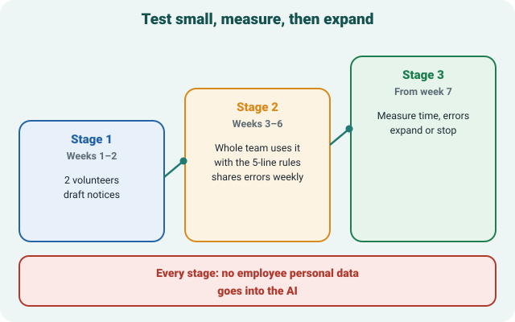

K6 · Adaptability and persistence › Level 5 Leading
Lead your team through change, including bringing AI into the work
This lesson completes Sheet 7: Change plan and team AI rules. Print template. Your team members should take Use AI safely (Level 3). This lesson is not legal advice; the legal sources are listed at the end.
1. Objectives
- Write a 6-step change plan: reason, what changes and what stays, small test, concerns, support, measure again.
- Write a 5-line team AI rule: tools, data, checking, disclosure, responsibility.
2. Retrieval warm-up
- What are the four parts of a team working agreement?
- What are the three quarterly questions for reviewing teamwork?
Answers
- Roles; meetings; sharing invisible tasks; rules for different circumstances.
- What helps us work well; what makes it hard for someone to contribute; one small change to try.
Review: Build an inclusive team.
3. Explanation
Change at work usually meets concern. People fear losing familiar work, making mistakes, or being judged poorly. Concerns that are not heard turn into quiet resistance.
A change plan has 6 steps.
- Reason: why change is needed, stated with current figures.
- What changes, what stays: say clearly what is not changing. This helps people feel safer.
- Small test: one group, a few weeks, before the whole team.
- Hear concerns: write down each concern and answer it openly.
- Support: time to learn, a guide, less work during the switch.
- Measure again: compare figures before and after, and adjust if needed.

Protect the team's energy. During the switch, the team does both old and new work. Pause less important tasks. Do not add new targets in the first week.
Bringing AI into a team needs clear rules. Without rules, everyone uses it differently. The biggest risk is putting data into a tool when that is not allowed.
Team AI rules (5 lines)
- ToolsUse only tools your organisation has approved.
- DataNo personal data, client secrets or confidential documents.
- CheckingThe user rereads and checks figures and sources before sending.
- DisclosureSay when AI was used, if your organisation or client requires it.
- ResponsibilityThe sender is responsible, not the tool.
Many countries now have laws on personal data and on AI. Vietnam, for example, has a Personal Data Protection Law and an Artificial Intelligence Law. Your team's rules must follow your organisation's policies, which are based on such laws. When in doubt, ask your legal team or data protection lead.
4. Workplace example
Hypothetical scenario. Olivia heads HR and admin at a footwear factory. The company has approved an AI tool for drafting documents. The team has 6 people, and three fear being replaced.
She completes Sheet 7. Reason: drafting one internal notice takes 2 hours on average, and there are about 20 notices a month. What changes, what stays: AI drafts notices and general procedures; advising employees and handling records stay with people. Small test: two volunteers try it for 2 weeks.
At the meeting, someone asks: "Will anyone lose their job?" She answers openly: the time saved goes into advising staff, and nobody is cut in this round. She records the question and answer in the minutes.
The team's rules state clearly: no candidate files, payroll or health information goes into the AI. One person nearly pastes a list of employees into the tool. A colleague reminds them of line 2 of the rules.
After 6 weeks, drafting a notice takes about 40 minutes. The team decides to continue.
Why this works: the reason has numbers, and what stays the same is stated. Concerns are answered openly. The data rule is clear, so colleagues can remind each other.
5. Practice
Hypothetical scenario. You lead an accounting team of 5 at a trading company. The company is moving to new accounting software next month. Two older colleagues worry they will not keep up. Someone asks whether they can use AI to read invoices.
Write a 6-step change plan. Write the "Data" and "Checking" lines of your team's AI rules.
Hint 1
Could the team try the new software on a small part of the work first, such as one type of document?
Hint 2
Invoices may contain customer and partner information. Who has approved that AI tool?
Model answer
- Reason: the old software loses support at the end of the year; each month, about 2 days go on re-entering figures by hand.
- What changes, what stays: where data is entered changes; the document approval process and approvers stay the same.
- Small test: in weeks 1–2, enter only payment vouchers in the new software, running the old one in parallel.
- Concerns: meet the two older colleagues alone and note their worries; answer them at the team meeting.
- Support: 2 guided learning sessions each; postpone this month's analysis report.
- Measure again: compare errors and entry time after 4 weeks.
- AI rule, Data line: use AI to read invoices only if the company has approved that tool for this data.
- AI rule, Checking line: every figure the AI reads is checked against the original invoice before it is posted.
(The figures are hypothetical.)
6. Self-check
Choose an answer. Every option has an explanation.
Question 1. When you announce a change, why should you also say clearly what "stays the same"?
-
Not quite. Length is not the point. People need to know what remains stable.
-
Correct. Correct. Knowing what stays the same lets people focus on what they need to learn.
-
Not quite. What stays the same is information for the team, not a way to downplay the change.
Question 2. The team is about to change its packing process. Which roll-out is sensible?
-
Not quite. Going workshop-wide at once spreads errors, and concerns easily turn into resistance.
-
Correct. Correct. A small test finds problems early at low cost, and gives data to persuade others.
-
Not quite. Full agreement may never come. A measured small test is a safe way forward.
Question 3. An employee wants to paste the department's payroll into a free AI tool to add it up. What do you say?
-
Not quite. Deleting it later does not recall data already sent. Payroll is personal data that must be protected.
-
Correct. Correct. Under the Data and Tools lines, personal data is processed only with permitted tools.
-
Not quite. A correct result does not make up for the risk of leaking employees' data.
Question 4. An AI-drafted report with a wrong figure has been sent to a client. Who is responsible?
-
Not quite. A tool does not take responsibility for people. The team rules say the sender is responsible.
-
Correct. Correct. Under the Checking and Responsibility lines, the user rereads, checks figures and is responsible.
-
Not quite. The error reached the client. Someone must own it, fix it and update the client.
7. Reflection
- The last time your team changed something, which concern did nobody answer?
- What kinds of data does your team put into AI tools today? Who allowed it?
8. Real-world application
In the next 7 days, choose a change your team is about to make. Complete Sheet 7. If your team already uses AI, write the 5-line rules and check them against your organisation's policies.
Last updated: 14/11/2026. Sources (example: Vietnam, checked 14/11/2026): Law on Personal Data Protection No. 91/2025/QH15, passed by the National Assembly on 26/6/2025, in force from 01/01/2026. Law on Artificial Intelligence No. 134/2025/QH15, issued on 10/12/2025, in force from 01/3/2026. This lesson gives only names and effective dates. It does not interpret the provisions. Read the original texts and ask your legal team.
9. Metadata
| skill | K6 · Adaptability and persistence |
|---|---|
| level | Level 5 · Leading |
| group | N5 |
| framework_map | WEF: Resilience, flexibility and agility; AI and big data; Leadership and social influence; SkillsFuture CCS: Adaptability; Digital Fluency; CSfW: 3e Work in a digital world; DigComp 3.0; LifeComp: P2 Flexibility (reference only) |
| original | Vietnamese version |
| updated | 2026-11-14 |
Finish the lesson
Mark it as done and the site suggests reviews after 1, 3 and 7 days. The data stays on your device only.
Suggested reviews: